Status: in progress (Parts 2–3 measured and final; Parts 4–7 queued on the GPU).
This document is the control leg of the project. The reviewers' alternative explanation for our LLM results is: "the threshold alone causes divergence" (R1.2, R2.1). The control tests exactly that: run a system whose smooth dynamics provably cannot be chaotic through the same measurements we used on the LLMs, and keep the greedy argmax decoding on top. Whatever the control reproduces is not evidence for chaos in the LLMs; whatever it fails to reproduce is the discriminating signal.
| smooth part contracting | smooth part chaotic | |
|---|---|---|
| greedy argmax on top | negative control: Mamba-130m (pretrained) | positive control: random-init transformer, large weight gain |
| teacher-forced (no argmax) | perturbation must decay / stay bounded | must grow at the measured rate |
Why Mamba is provably non-chaotic (teacher-forced). Per layer, the state update (as implemented in the HF reference code) is $h_t = \exp(\Delta_t A)\,h_{t-1} + \Delta_t B_t\,x_t$ with $A=-\exp(A_\mathrm{log})<0$ and $\Delta_t=\mathrm{softplus}(\cdot)>0$. Every diagonal entry of $\partial h_t/\partial h_{t-1}$ is $\exp(\Delta_t A)\in(0,1)$. The short convolution is a shift register (nilpotent Jacobian). Under teacher forcing the one-step Jacobian over all layers' states is block lower-triangular in the layer index, so its eigenvalues are exactly those diagonal entries — all Lyapunov exponents are negative. The off-diagonal blocks make the Jacobian non-normal, so transient growth without chaos is possible; Part 4 measures it.
Models in this document
| tag | model | arch | trained on | role |
|---|---|---|---|---|
| Mamba-130m | state-spaces/mamba-130m-hf |
24 layers, SSM, no attention | the Pile | negative control |
| Mamba-370m/790m/1.4b | same family | 48 layers | the Pile | scale check |
| DeepSeek-1.5B | DeepSeek-R1-Distill-Qwen-1.5B |
28-layer Qwen2 | (distilled) | our LLM results |
| Pythia-410m/1b | EleutherAI/pythia-410m/1b |
attention | the Pile | attention model, same training data as Mamba |
| randqwen-g$g$ | random init, exact DeepSeek-1.5B architecture, update-matrix init std $0.02\,g$ | Qwen2 | none | phase sweep |
| pythia-410m step0 | random init checkpoint | GPTNeoX | none | real-size random init |
--inbatch-ref): every perturbed batch contains an
unperturbed reference row, and all differences are measured in-batch.
Reason (measured on this GPU): two forwards of identical inputs in
different batch shapes differ by up to $8.7\times10^{-4}$ (reduction-order
noise in the conv kernels). The old protocol (baseline in its own batch)
therefore had a numerical floor of that size, which fakes a "response" at
the embedding layer. With the in-batch reference the embedding-layer
response at $r=10^{-4}$ is $1.8\times10^{-6}$ (i.e. exact zero). All Mamba
numbers below use this protocol.Definitions. $m_t = z_{(1)}-z_{(2)}$ = top1−top2 logit gap at step $t$ ("margin"). $\delta m_t(u) = m_t^{(u)}-m_t$ = margin change caused by direction $u$. A flip requires $\delta m_t \le -m_t$, so the signed local threshold is $r_c^-(t,u) = m_t\,r/\max(-\delta m_t(u),0)$, the per-direction flip threshold is $r^*(u)=\min_t r_c^-$, and $r^*=\min_u r^*(u)$. The predicted first flip is $T = \min\{t: r_c^-(t,u)\le r\}$. The response $a(t)/r = \|\delta h_L(t)\|/r$ at the last layer. The local stretching rate $\lambda_{10}(t)=\log[a(t{+}10)/a(t{-}10)]/20$.
Data. Mamba-130m, 3 prompts (interstellar / childhood / cyber), 20 directions, 12 radii $3\times10^{-4}\dots 5$, 300 tokens, teacher-forced along the model's own greedy sequence; in-batch reference. DeepSeek-1.5B: the existing w100 pipeline run (same prompt, 20 directions, r=0.1).
(a) $a(t)/r$ at the last layer (median over 20 directions, 10–90 pctile band). Mamba starts at $a(1)/r\approx0.9$ and stays in $0.2$–$0.9$ for 300 tokens. DeepSeek starts at $2.4$ and holds $\approx2.5$. Both models carry a prompt perturbation indefinitely — in the transformer via the KV cache, in Mamba via slowly-decaying state channels. "Attention carries the perturbation" is therefore too strong as stated; attention carries a ~3× larger response (Part 4 shows the mechanism difference).
(b) normalised: neither decays to zero. The naive expectation "the contracting control must decay to zero" is false: a spectrum of near-zero decay channels (long-memory SSM channels) keeps the kick alive. This is the caveat predicted by the theory (exponents close to 0), now measured.
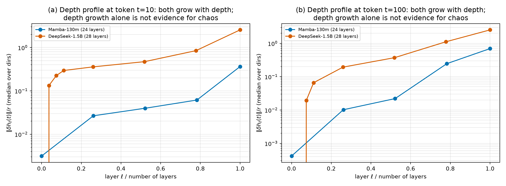
Depth profile of the response at $t=10$ and $t=100$ (median over directions). Both models' responses grow with depth (Mamba ×200 from layer 0 to 23 at $t=10$, DeepSeek comparable). Depth-wise growth of $\|\delta h_\ell\|$ is therefore not an attention-specific or chaos-specific signature by itself — the control reproduces it. (The paper's layer-probe/non-normality results should be read against this background.)
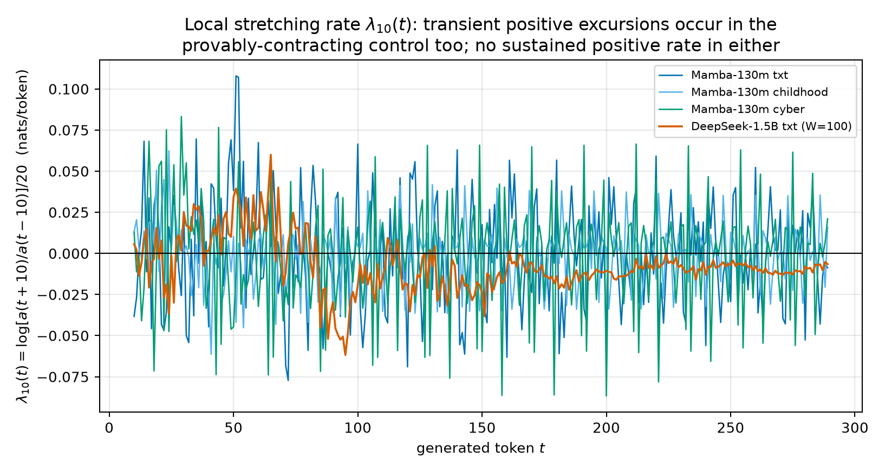
Local stretching rate $\lambda_{10}(t)$, last layer, $r=0.1$. Honest null: the control's rate fluctuates around zero with transient positive excursions up to $+0.11$ nats/token — larger than DeepSeek's ($\le+0.06$). Means: Mamba $0.000$ to $-0.001$; DeepSeek $-0.006$ (no window active). Neither model has a sustained positive rate at the last layer under the natural (no-window) setting. The LLM's famous "positive early $\lambda\approx+0.03$" is a window-limited phenomenon (pre-clip accumulation), and transient positive excursions alone do not separate the contracting control from the transformer. What does separate them is the size of the carried response (×3) and the window flush law — and the Jacobian spectrum (Part 4).
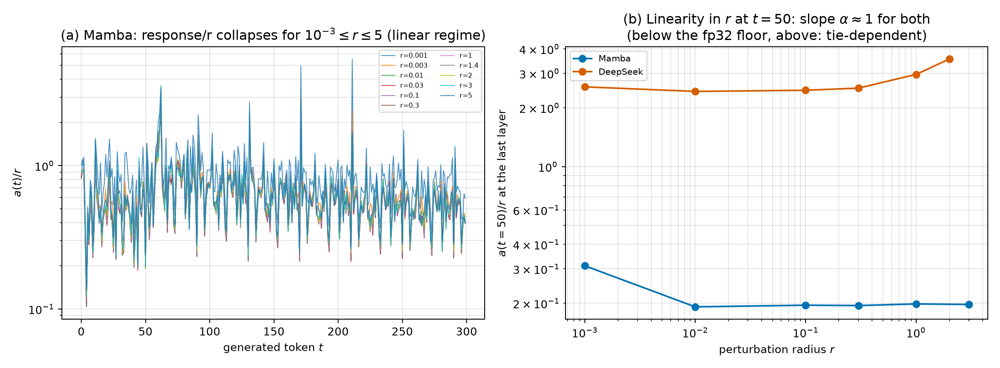
(a) $a(t)/r$ collapses across $10^{-3}\le r\le 5$ — the response is exactly linear in $r$ over 3.5 decades, same as the LLMs. (b) at $t=50$: slope $\alpha\approx0$ in $a/r$ vs $r$ (i.e. $a\propto r$) for both models. The fp32 floor with the in-batch reference is below $r=10^{-3}$ (Mamba), same order as DeepSeek's $3\times10^{-4}$.
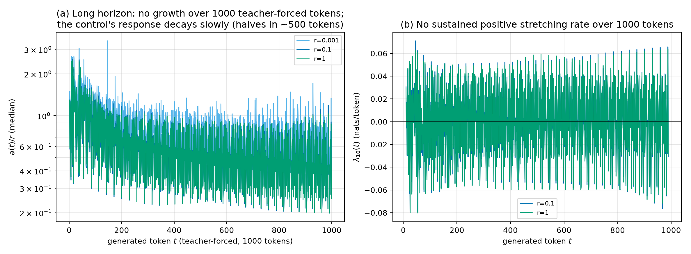
1000-token teacher-forced horizon: the control's response halves over ~500 tokens ($0.52\to0.26$ in units of $a/r$) and never grows. No sustained positive stretching rate exists in the provably-contracting system.
Data. 18 free runs × 20 directions = 360 direction-runs at radii $0.03\dots5$, across the three prompts; predictions from the signed threshold rule measured at the radius being predicted.
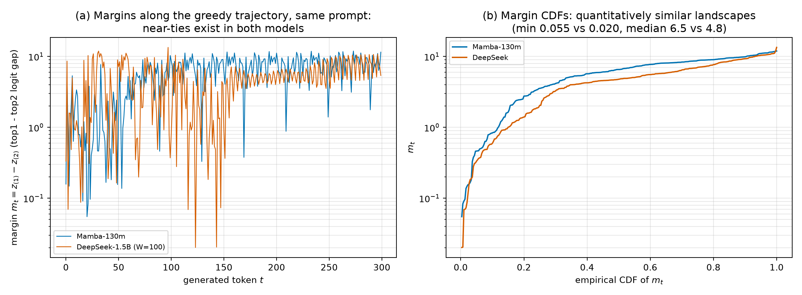
Margin landscapes along the greedy trajectory, same prompt: near-ties exist in both (Mamba txt min $m=0.055$, DeepSeek $0.020$; medians $6.5$ vs $4.8$). The flip machinery of greedy decoding — discrete near-tie decisions — is architecture-independent.
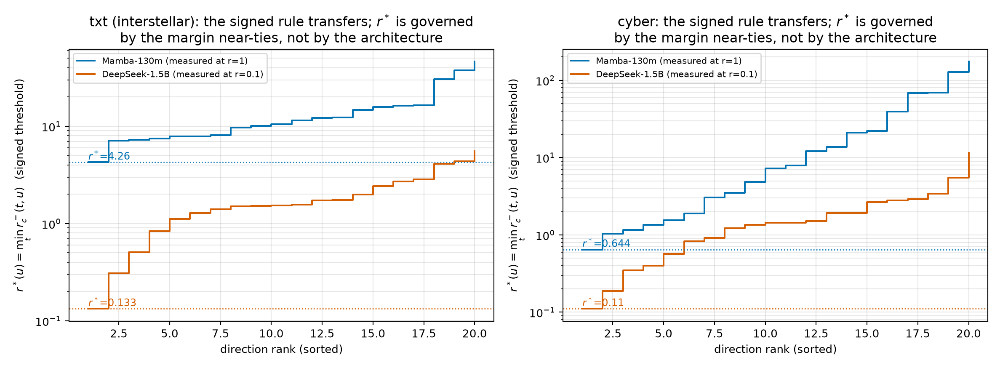
Per-direction signed thresholds $r^*(u)$, sorted ("danger ladder"). txt prompt: Mamba $r^*=4.26$ vs DeepSeek $r^*=0.133$. cyber: $0.64$ vs $0.18$-scale. But the childhood prompt: Mamba $r^*=0.0869$, more fragile than DeepSeek's 0.133 on txt. $r^*$ is governed by the smallest margin near-tie of the prompt, not by the architecture or by chaos: the control is not "more robust" in any universal sense.

The central negative-control result. Observed vs predicted flips (signed rule, first crossing), 18 runs:
The signed threshold rule is at least as exact on the provably non-chaotic control as on DeepSeek (318/320). Token flips under greedy decoding are a decision-boundary phenomenon, present with full fidelity in a system with all-negative Lyapunov exponents. This directly answers R1.2/R2.1: the threshold alone is sufficient to produce divergence; it does not need chaotic amplification.
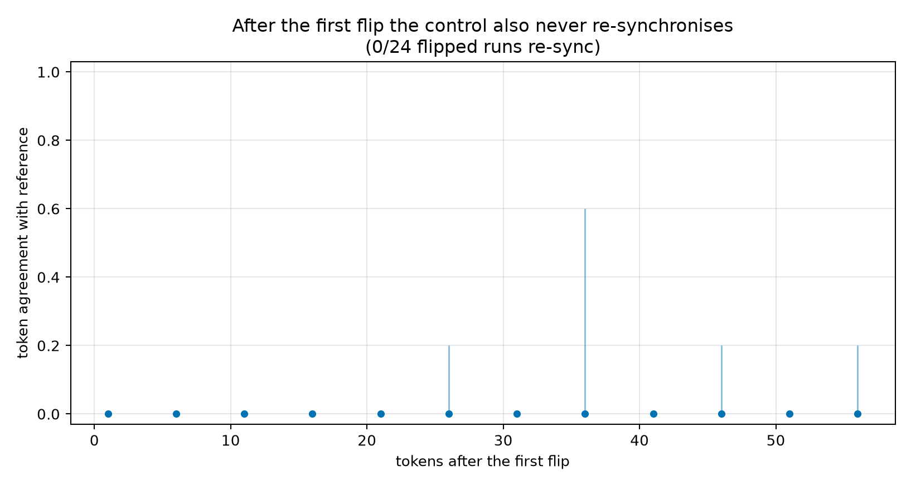
After the first flip: token agreement with the reference (median + 10–90 pctiles over all 24 flipped runs). 0/24 flipped runs ever re-synchronise. The "flux tube" phenomenology — trajectories shadow exactly until a boundary crossing, then split terminally — is reproduced by the control.
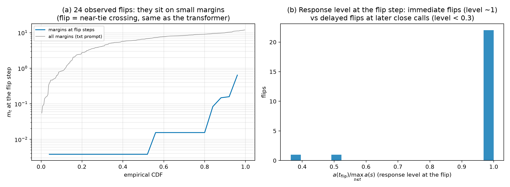
(a) Margins at the flip steps sit at the bottom of the margin distribution (values $0.0038$–$0.16$). (b) Response level $a(t_\text{flip})/\max_{s\le t}a(s)$: both immediate flips (level ≈ 1, at the response peak: steps 0 and 3, margins 0.0038–0.64) and delayed flips (level 0.36–0.50, at later close calls: step 21, margin 0.084) occur in the control — the same immediate/delayed taxonomy as the LLM (17/27 vs 10/27 there). Latency in the control is bounded by the prompt's own close calls (21 tokens here), because the carried response decays slowly rather than being re-amplified.
What Part 3 establishes. Flip statistics, threshold prediction, survival, bit-identity, immediate+delayed taxonomy — all reproduce in a provably contracting system. None of these can be cited as evidence for chaos in the LLMs. The discriminating measurements must come from the smooth part: response size and its Jacobian spectrum (Part 4), the window flush law (transformer-specific), and the phase-controlled positive control (Part 6).
Data. In-batch finite-difference Jacobian measurements (bit-exact within each batch). The state vector is the concatenation over layers of (SSM state $[d_\text{inner},16]$, conv register $[d_\text{inner},4]$). Experiments on the real teacher-forced trajectory of the txt prompt (300 tokens): (A) kick the full state with $\varepsilon=10^{-2}$, 8 random unit directions, follow 200 tokens; (C) sample the state-Jacobian diagonal $\log J_{ii}=\Delta_t A_i$ (24 channels × 16 SSM dims per layer, 13 layers, 5 token positions); (B) one-step $\sigma_\max(J_t)$ by power iteration.
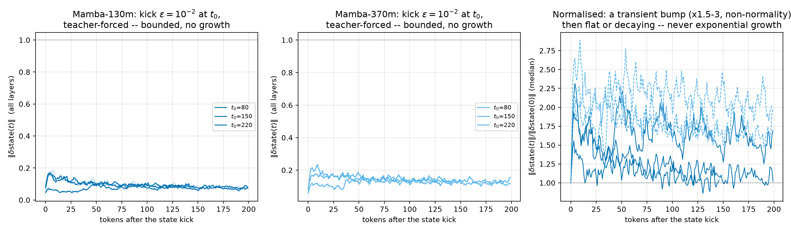
(A) A direct kick to the internal state (the thing the KV cache is for a transformer): the response is bounded — a transient bump to ×1.5–3 of the initial size (peaking 3–54 tokens in), then flat or decaying. No exponential growth over 200 tokens. Mamba-370m behaves the same (right panel, dashed).
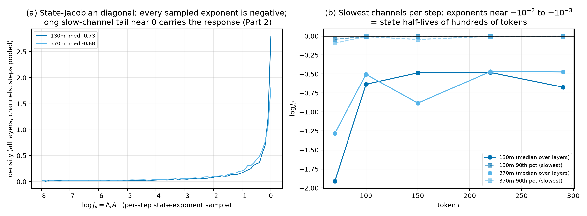
(C) The exponent spectrum, measured: every sampled state exponent is negative (130m: median $\log J_{ii}=-0.73$; 370m: $-0.68$), with a long slow-channel tail — the 90th percentile is $-0.004$ (130m) / $-0.015$ (370m), i.e. channels with half-lives of 50–700 tokens. This tail is the measured mechanism behind Part 2's "the control carries the kick": persistence comes from marginal channels, not from instability.
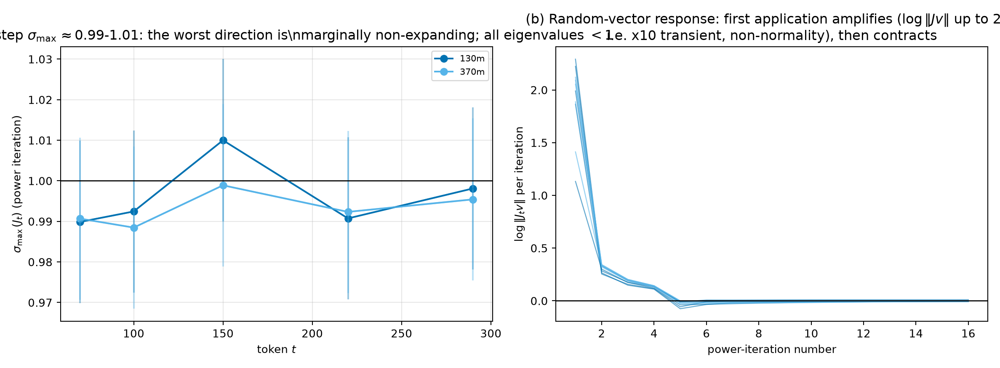
(B) $\sigma_\max(J_t)\approx0.99$–$1.01$ at all measured steps: the worst direction is marginally non-expanding while all eigenvalues are $<1$ (a strongly non-normal regime). A random vector gets transiently amplified up to ×10 on the first application of $J_t$ (panel b, $\log\|Jv\|$ up to 2.3), then contracts. This is the concrete, measured instance of R1.2's "transient growth without chaos": it exists, it is worth ×2–10, and it decays.
Block structure, verified bit-exact. Perturbing layer $\ell$'s state produced an exactly-zero response in every layer $<\ell$ at the next step (max leak $=0$ over all sampled channels, layers, and steps, both models) — the teacher-forced one-step Jacobian is block lower-triangular as the theory requires, so its eigenvalues are exactly the sampled diagonal entries above.
Part 4 verdict. The control's smooth part is non-expanding at every level we can measure: eigenvalues (all $<0$), worst singular value ($\approx1$), and finite kicks (bounded, decaying). Against this, the transformer's distinguishing features are the size of its carried response (×3 at the last layer, Part 2) and its window flush law — not the mere existence of amplification.
Data. Mamba-130m: 6 × 1000-token greedy trajectories (last-layer states, 768-dim, the same prompts as the DeepSeek set that overlaps). DeepSeek-1.5B: the 16 non-loop 1000-token trajectories from the existing project data. Same estimator (chunked correlation sum, identical ε grid and plateau fit; numpy port validated against the project's reference values), same loop screen. Surrogates: time-shuffle and phase randomisation.
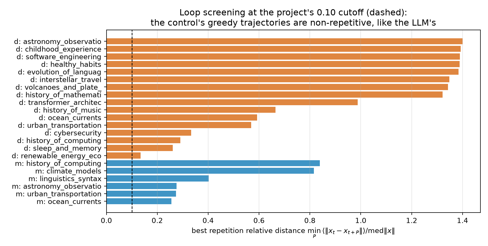
Loop screening (best repetition relative distance, cutoff 0.10 dashed): all 6 Mamba trajectories are non-repetitive (0.26–0.84), like the DeepSeek set (0.14–1.4). Greedy Mamba text is list-like but does not loop at the state level.
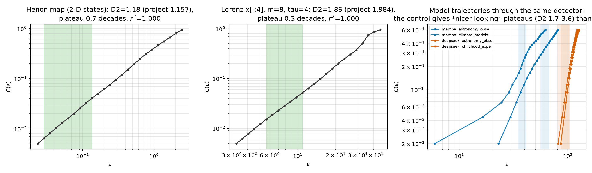
(a,b) The same detector that the project validated on references recovers scaling here too: Hénon (direct 2-D states, N=3031) $D_2 = 1.18$ (project: 1.157, true ≈1.26); Lorenz ($x$[::4], m=8, τ=4) $D_2 = 1.86$ (project: 1.984), flat plateau 0.95 decades. (c) Model trajectories: steep sigmoids, no scaling region — for BOTH models.
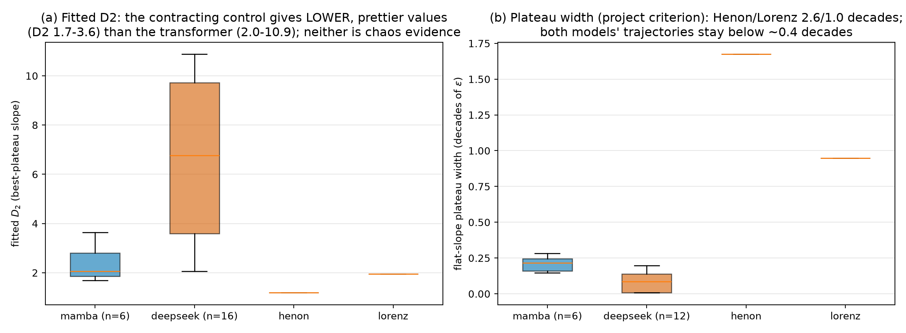
(a) Fitted $D_2$: Mamba 1.69–3.64 (median 2.05), DeepSeek 2.05–10.9 (median 6.8), all with $r^2\ge0.999$. If "low D2" were evidence for chaos, the provably-contracting control would look more chaotic than the transformer. (b) Plateau width (the project's flat-slope criterion): Mamba median 0.22 decades (max 0.28), DeepSeek 0.09 (max 0.20) — versus 1.67 (Hénon) and 0.95 (Lorenz). Neither model has a real scaling region; the control's is wider.
Surrogates (per trajectory): time-shuffling changes nothing (D2 identical — the estimator is a point-cloud statistic, confirming the project's "tautology" finding on the control too); phase randomisation raises D2 (3.6→7.8, 2.1→5.8 on Mamba). The apparent low dimension comes from the temporal smoothness of the state sequence, which the contracting control has at least as much of as the transformer.
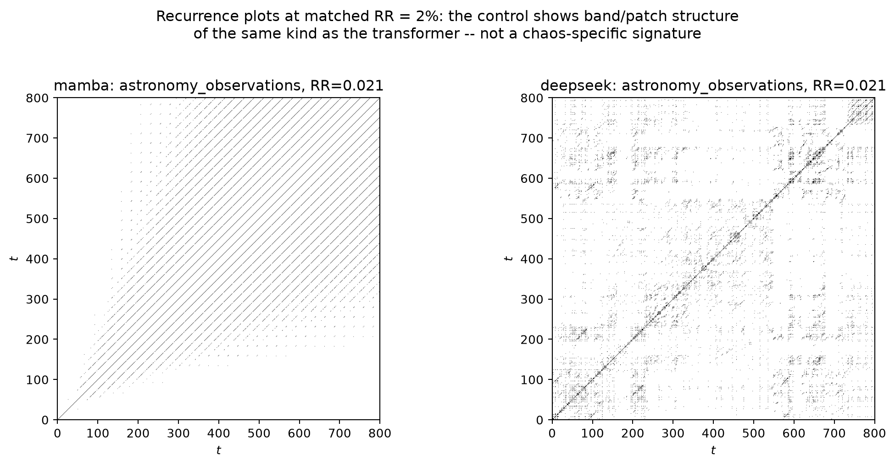
Recurrence plots at matched recurrence rate (RR=2%): the control shows the same band/patch texture as the transformer. "Lorenz-like" recurrence structure is not a chaos-specific signature either.
Part 5 verdict. D2 / RQA / RP diagnostics behave the same way on the negative control as on the LLMs — or flatteringly so. Consistent with the project's existing conclusion that these diagnostics are descriptive at best; the control removes any remaining doubt that they could be cited as positive evidence.
8 gains $g\in\{0.35\dots4\}$ × (update-matrix init std $0.02\,g$), exact DeepSeek-1.5B architecture, random init, through the full A1 + free-run + depth-probe pipeline. Calibrates which of our depth ("vertical") measurements actually track the mean-field order parameter, and gives the positive control: at large $g$ the teacher-forced response must grow at the measured rate, with argmax on top.
Pythia-410m/1b trained on the Pile like Mamba: the attention-vs-no-attention comparison at fixed data. Plus the Pythia-410m step0 checkpoint as a real-size random-init example.